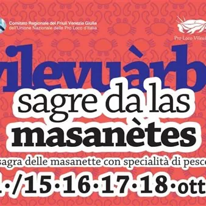

da ven 9 ott a dom 18 ott · dalle 19:00
Sagra delle Masanette
A Villaorba di Basiliano arrivano i granchi dal carapace “molle”, le masanètes in friulano a cui la Pro Loco dedica da molti anni una sagra; I menù propongono altre specialità di mare per tutti i gusti.
 Indicazioni
Indicazioni
- Costi e prenotazioni
- Costo non indicato · Prenotazione non indicata
- Programma
- Programma da verificare. Apri la fonte ufficiale per orari e possibili aggiornamenti.
- In caso di maltempo
- Nessuna indicazione specifica pubblicata.
- Note
- Acquisito automaticamente dalla fonte.
L’EVENTO
Descrizione completa
A Villaorba di Basiliano arrivano le masanètes in friulano ovvero i granchi con il carapace “molle”, a cui la Pro Loco dedica da molti anni una sagra;
I menù dei FORNITISSIMI CHIOSCHI GASTRONOMICI propongono anche molte altre specialità di mare per tutti i gusti come seppie in umido con polenta, farro alla pescatora, baccalà con polenta, calamari fritti e tanto altro...… PROGRAMMA VENERDÌ 9 OTTOBRE 19,00 Apertura chioschi e cucina
21,30 Serata musicale con live band e, a seguire, musica con Dj Michael Macor SABATO 10 OTTOBRE 18,00 Inaugurazione: “Mostra manufatti dell’Unione Artistico Culturale di Basiliano”
18,30 Apertura chioschi e cucina
21,45 Serata con il gruppo “DANCEMANIA” disco live 360° . A seguire musica con Atomic Dj DOMENICA 11 OTTOBRE 11,00 Degustazione guidata di vini
11,30 Apertura chioschi e cucina
12,30 Pranzo in allegria con il cabaret di SDRINDULE
18,00 Riapertura cucina
19,30 Concerto con il gruppo “VAGABONDI NOI” Tributo Nomadi GIOVEDÌ 15 OTTOBRE 18,30 Apertura chioschi e cucina (aperta fino alle 20.30 con menù ridotto)
21,00 Spettacolo teatrale a cura di una compagnia del territorio VENERDÌ 16 OTTOBRE 19,00 Apertura chioschi e cucina
21,45 Serata musicale con “Dj Frankie nel Bosco” SABATO 17 OTTOBRE 18,30 Apertura chioschi e cucina
19,00 Aperitivo in musica con Paolino Dj
21,15 Concerto con il gruppo “MAX FOREVER” Tributo Max Pezzali & 883
a seguire musica con Paolino Dj DOMENICA 18 OTTOBRE 10,15 “A spàs paîi curtii di Vilevuàrbe”
marcia non competitiva tra le corti e la campagna di Villaorba
Speaker della marcia Igor Damilano
Intrattenimento musicale con “DISCOSTAJARE STREETBAND”
(Iscrizioni: 16-17 ottobre dalle 18.00 alle 21.00 presso i locali della manifestazione ed alla partenza della marcia)
10,15 “A spàs cun la Masanete”
passeggiata per piccoli esploratori con il gruppo “Ragazzi si Cresce”
(Iscrizioni: esclusivamente alla partenza della marcia)
18,00 Riapertura chioschi e cucina
18,30 Musica dal vivo Fornita enoteca con selezione di vini friulani e birre di produzione artigianale
PIATTI ANCHE DA ASPORTO
Tutto al coperto
IL PROGRAMMA
Programma e orari
Appuntamenti raccolti dalle fonti elencate. Dove manca un orario, non è ancora disponibile in questa scheda.
Programma pubblicato
- Dal 2026-10-09 al 2026-10-18
INFORMAZIONI UTILI
Prima di partire
- Controllare la fonte prima di partire.
ORGANIZZAZIONE